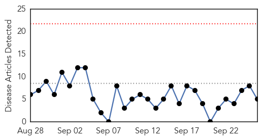

30 Day Trends
Web: 0 alerts, 0 warnings
Twitter: 1 alerts, 0 warnings
Top Articles:
- 0.989
- Oakland County woman who died of West Nile Virus identified
- 0.860
- Maine, New Hampshire have light mosquito year; Vermont mixed
- 0.833
- WNV Update: Five Human Cases of West Nile Virus Reported In Bridgeport, Shelton
- 0.791
- Vermont sees a mixed mosquito year
- 0.509
- State records its first West Nile death this season
Top Tweets:
-
No tweets found for Sep 26, 2015
Web/News Articles
Tweets

Article Locations

Article Confidences